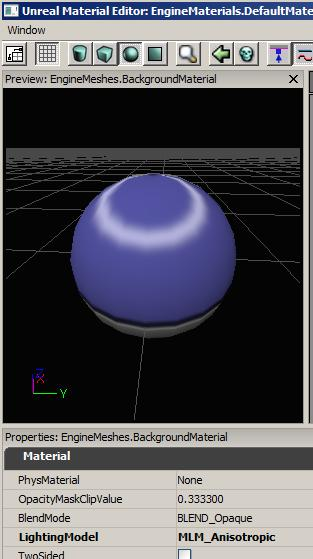

異方性(Anisotropic)ライティング
概要
異方性 (Anisotropic) ライティング モデルは、髪の毛、艶の消された金属のような粒子や溝を持つマテリアルに最適です。これらの場合、各ピクセルに 1 つの法線があるのではなく、粒子の方向に垂直にさまざまな法線があります。異方性 (Anisotropic) ライティング モデルは、粒子の方向を指定することができ、この接線方向はライティング計算で Normal の代わりに使用されます。
Unreal の静的ライトマップ データは、anisotropic direction の情報をうまく取り込まないので、アニソトロピック マテリアルはこのタイプのジオメトリでは回避するべきです。しかしながら、 ライトマス や ドミナントライト では、シャドウは前演算されますが、Specular が完全に動的になっているため異方性 (Anisotropic) マテリアルはこの場合で非常によく動作します。
設定
異方性 (Anisotropic) ライティング モデルを使用するには、LightingModel を MLM_Anisotropic に設定するだけです。
粒子のデフォルトの方向は (0,1) であり、これは UV 空間で "down (下)" に対応しています。マテリアル ビューを Sphere に変えると、明るい光のもとで人の髪の毛に見られる円状のタイプの Specular エフェクトを見ることができます。

タンジェント空間
ライティングの計算は、「タンジェント空間」(接空間) で行われます。このタンジェント空間とは、メッシュの UV 座標において、テクスチャマッピングの U および V 方向によって定義される空間です。 赤のチャンネルが、 U (テクスチャマップにおいて左から右への方向) を表し、緑のチャンネルが、V (テクスチャマップにおいて下向きの方向) を表し、青がテクスチャのサーフェスから外側へ出ていく方向を表します。
タンジェント空間のベクター値をテクスチャ (たとえば法線マップなど) 内部に格納するには、方向をテクスチャのカラーでエンコードします。0-255 の範囲で -1 から 1 の値を表します。0 は、カラー値 127 としてテクスチャに格納されます。そのため、通常の場合法線マップは R=127、G=127、B=255 となります。これは (0,0,1) というベクターの方向が、テクスチャのサーフェスの平面から外に向かっていることを表しています。
タンジェント空間のマップとして使用されるテクスチャは、TC_NormalMap 圧縮設定値とともにインポートされることが重要となります。これは、 UnpackMin および UnPackMax プロパティが -1 から 1 の範囲となるように適切に設定されなければならないためです。また、テクスチャの SRGB 設定項目を無効にしなければなりません。
AnisotropicDirection (異方性方向)
AnisotropicDirection (異方性方向) の input に指定すべき方向は、メッシュの UV をどのようにアンラップするかによります。メッシュのテクスチャマップを見たときに、グレイン (肌理) を水平方向に走らせるようにするのか、あるいは、垂直方向に走らせるようにするのかということに依存するのです。グレインの方向をすべて水平方向にするのであれば、(1,0,0) という値で Constant3 を使用することによって、その方向を表します。すべて垂直方向にするのであれば、(1,0,0) という値を使用します。
ある部分では水平方向に、他の部分では垂直方向にグレインを走らせるのであれば、テクスチャマップを使用して異方性方向を表すようにする必要があります。グレインが水平方向にする部分では、カラーを R=255、G=127、B=127 に設定し、垂直部分では、R=127、G=255、B=127 に設定するとともに、これを異方性方向マップとして使用します。さらに複雑な方向をもたせたい場合は、どのカラーによって望みの方向を表すことができるのかを見つけ出さなければなりません。
次は、方向マップの例です。方向が、円の周りのタンジェント方向に対応しています。残念ながら、この種のマップを作成するツールは知りません。この円は、C 言語による簡単なプログラムによって作成されました。
次は、そのマップを使用するマテリアルです。 :
 次は、そのマテリアルを使用したサーフェスです。 :
次は、そのマテリアルを使用したサーフェスです。 :

法線マップを使用する
法線マップを通常に指定して、法線マップが Anisotropic Direction を摂動することができます。

パッケージのサンプル